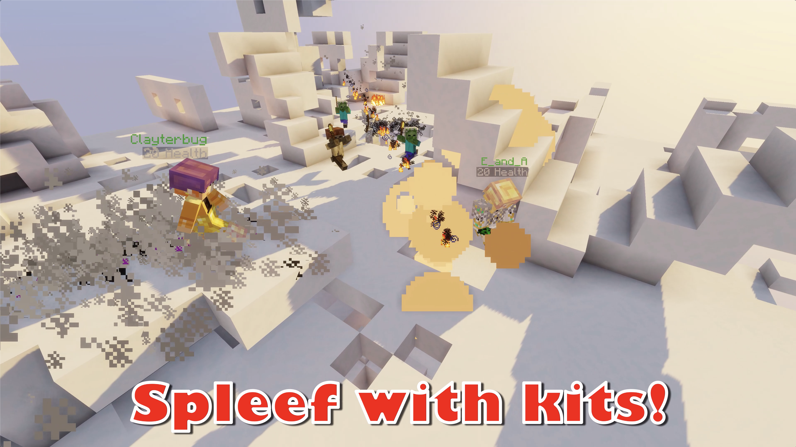

Play with as many friends as you want in this chaos-filled kit-based Spleef minigame map!

Download!
Kit Spleef for Minecraft 1.15Changelog
- disabled SpectatorsGeneratedChunks game rule (was enabled to work around 1.14 bug)
- disabled Phantoms
+ enabled doImmediateRespawn
Older Downloads
Kit Spleef for Minecraft 1.14Changelog
Includes 1.14-specific fixes for the 1.13 version
Kit Spleef for Minecraft 1.13
Changelog
Map completely rewritten from the ground up! This version also works in Minecraft 1.14, but I recommend that you download the 1.14 version if you plan to play 1.14, since it contains 1.14-specific fixes.
Kit Spleef for Minecraft 1.12 v6
Changelog
1.12 v6
~ Fixed special item spam introduced in previous version for real this time
~ Reduced cost of Demolitionist special move to 3 Levels
1.12 v5
~ Potion effects cleared after round
~ Fixed special item spam introduced in previous version
~ XP info shows at countdown instead of when the map reset starts
~ Scoreboard actually fixed this time
1.12 v4
~ Fixed scoreboard?
+ Added info message when Special Moves is on
~ hopefully fixed that stupid scoreboard
~ Beastmaster special move costs less (5 levels)
~ Builder special move costs less (6 levels)
- Removed unneeded player data
1.12 v3
~ Players should no longer end up in the spawn box behind the lobby
+ Added a button to send players back to the lobby should they end up in the spawn box by some wizardry
1.12 v2
~ Fixed un-oped players being unable to chose kits or change settings in Multiplayer
~ (Hopefully) fixed sidebar scoreboard not updating properly when a player loses
+ Added a reset switch in case the map goes loopy. It's located behind the lobby wall. Look for a purple wool.
1.12 Release
+ New kit: Random kit. Randomly sets the player's kit to one of the other kits, at the start of the game. Must be re-picked at each round.
+ New setting: Random Kits Override. Overrides all player kit selections and instead sets all player kits to a random kit. This is automatically disabled if Lock Kit is used.
+ Spectator kit now has a sign on its pedestal.
+ Fixed everything that 1.12 broke (so this map is not compatible with 1.11 or lower)
Kit Spleef for Minecraft 1.11 v7
Changelog
1.11 Patch 7
~ Fixed zip having too many folders
1.11 Patch 5
+ Map now resets properly (No more random floating snow!)
+ Added a boundary to prevent breakages if players venture too far away
~ Fixed a bug where Bat Bomb power-up was broken
~ Widened the settings second-floor pathway
~ Fixed a bug regarding death during games (Incorrect scoreboard attributions)
~ Changed lightning sound effect to the totem of Undying sound effect
- Removed GG messages due to complaints
1.11 Patch 4
+ added the Motivational Chat Messages back, this time much more motivational and constructive!
~ Decreased file size from 6 MB to 3.5 MB
1.11 Patch 3
- Removed a lot of laggy signs from behind the Redstone
+ Big performance increase!
- Due to complaints about it being insulting, the Motivational Chat Messages lever is now gone. However, you can re-enable it by placing a lever and a sign above the lever in the gap where it used to be.
1.11 Patch 2
+ Fixed lobby countdown color error
+ Fixed Demolitionist kit issues
1.11 Release
+ Add doWeatherCycle to false to prevent rain
+ Give the kit's helmets curse of binding
+ Give builder's boots curse of binding
+ Update map icon and name to say 1.11
+ Move Lobby countdown to the new “Action bar” title view
+ Move jukebox announcer to “action bar” title view
+ Patched all the things 1.11 broke
- Remove Single Player opponent number printout (Was there due to a 1.10 bug)
Kit Spleef for Minecraft 1.10
Changelog
Big 1.10 update!
+ New kit! Builder - stack your way to victory with snow blocks!
+ Special abilities! Charge up your XP bar by digging, then unleash your kit's unique superpower!
+ More settings! Fine tune Jukebox rate and Sudden death start delay!
+ New Snow-themed Lobby!
+ Game properly handles players logging off during rounds
+ Lots and lots of bug fixes
~ Re-worded a few things
- Removed all references to franchises, whether they were added intentionally or not
Kit Spleef for Minecraft 1.9
Changelog
Fixes for Minecraft 1.9
~ You cannot blow holes in the lobby anymore
+ Proper PVP logging handling (but not endorsement!)
+ Smarter CPU players
Kit Spleef for Minecraft 1.8
Changelog
Original version of the map for Minecraft 1.8.
Important Notes
-
If players are unable to change settings, set
spawn_permissioninserver.propertiesto 0. - This map will probably not work on servers with plugins! Please use vanilla without datapacks to ensure the best results. I will not fix issues relating to plugin compatibility. Instead, report those to the plugin devs.